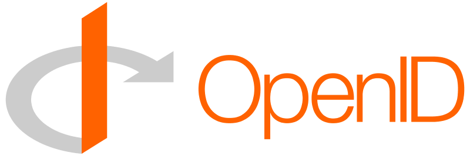

Get Mozzomail for Gmail
Mozzomail uses the OpenID and OAuth protocols for gmail authorization.
Learn more about Mozzomail security.

- 

The natural order of things mail.

Security
We understand that your email contains personal and potentially sensitive information and, therefore, we take precaution to ensure that it is stored securely while on our servers. It is our promise that we will always respect your privacy. Mozzomail uses the OpenID and OAuth protocols for Gmail authentication and access. We will never have access to or the ability to store your Gmail password. We analyze your emails only for the purpose of organizing your links, documents and media and only store meta information (e.g. document and link identifiers, sender, recipient, date and keywords), as well as, anonymous analytics that help us to continually improve Mozzomail and present you with the most relevant information. Original emails are deleted post-processing and are not stored on our servers.
Read our privacy policy.

Why use it?
Email remains the collaborative tool of choice. It is full of personally actionable information that you regularly need to locate and send. The most important information, however, quickly becomes buried in the depths of your inbox and sent mail. Our data suggests that of all the people you cross paths with via email, you only really communicate with around 12% of them. Furthermore, 50% of your email is exchanged with this 12%! Mozzomail analyzes your email behavior (with whom you communicate and what you talk about) and based on this analysis, presents you with the links, documents and media that are most relevant to you.
Read our blog post “Email is full of it” for the full case study.
What is it?
Mozzomail identifies the most meaningful links, documents and media buried within your email and puts them at your fingertips. Mozzomail’s smart filters and tiled interface make it easy to find and manage your relevant information…you may also discover some things that you’d long forgotten. Sharing has never been easier: e-mail, tweet or post your favorite links to facebook and conveniently email documents and media right from Mozzomail!

Who uses it?
Photographers, graphic artists and web designers are using Mozzomail to easily find and share media with their co-workers and clients. Lawyers, investors and entrepreneurs are enjoying the ability to locate and share their important documents. Bloggers, social media professionals and community managers choose Mozzomail to browse for buried and forgotten links.